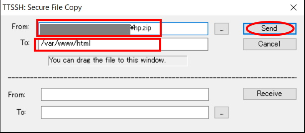
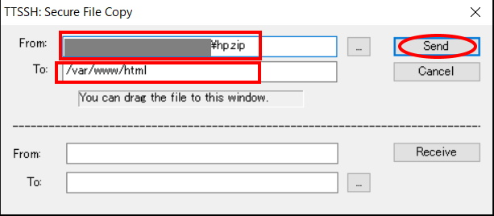

4. 上側(send)の"From"にローカル側のファイルディレクトリを記入。今回は
hp.zipというファイルを転送。To"にサーバ側のファイルディレクトリを記入。sendを選択
5. "Premission denied"が出るときは
chmodコマンドで当該フォルダのパーミッションを変更。(Othersにwrite権限付与)6.
ls -lコマンドで転送できたかを確認
1. TeratermからSSHでEC2にログインする
2. root権限に切り替える
sudo su -
3. Teratermメニューバーの「ファイル」から"SSH SCP"を選択
4. 上側(send)の"From"にローカル側のファイルディレクトリを記入。今回はhp.zipというファイルを転送。To"にサーバ側のファイルディレクトリを記入。sendを選択

5. "Premission denied"が出るときはchmodコマンドで当該フォルダのパーミッションを変更。(Othersにwrite権限付与)
6. ls -lコマンドで転送できたかを確認
[root@ip-10-0-1-117 ~]# ls -l /var/www/html
-rw-r--r-- 1 ec2-user ec2-user 2990961 Mar 21 07:10 hp.zip
7. ついでにzipを解凍
umzip /var/www/html/hp.zip
以上